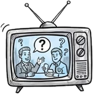
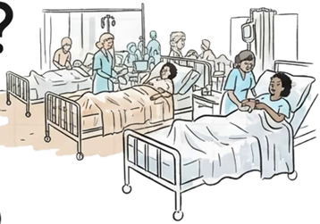
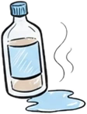
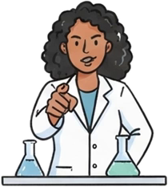
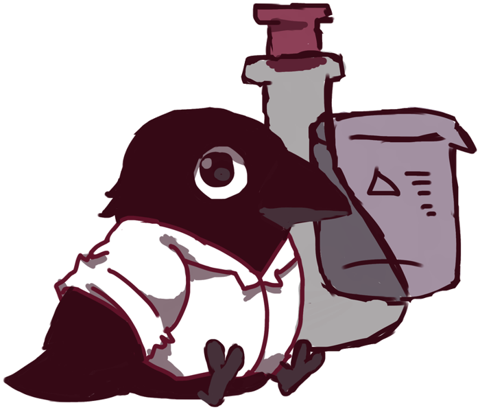
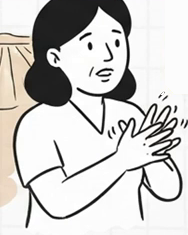
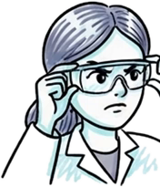
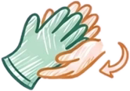
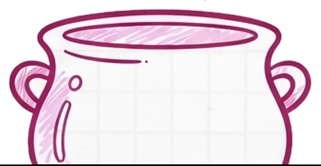
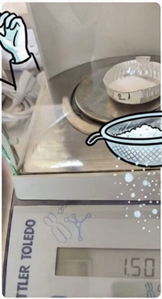

1966, California: una estudiante ve un problemón.
En los hospitales no siempre había agua y jabón.
¡Idea! Alcohol + gel = manos limpias sin agua.
¡Una estudiante como tú!Mira el video, escucha la historia de Lupe y juega para convertirte en detective científic@.

Cuenta la historia que en 1966 una estudiante de enfermería en California inventó el gel con alcohol. De Lupe no hay fotos: la dibujamos como la imaginamos.

Lupe Hernández
así la imaginamos
1966, California: una estudiante ve un problemón.
En los hospitales no siempre había agua y jabón.
¡Idea! Alcohol + gel = manos limpias sin agua.
¡Una estudiante como tú!Vota rápido: ¿alcohol al 100% o al 70%?
Ponte de pie, una gotita de gel del tamaño de una moneda… ¡y sigue a Kika!

Toca los ingredientes en el orden correcto para echarlos a la olla.


Se pesa con precisión, el carbopol se tamiza para que no haga grumos, y el gel debe quedar espesito: unos 3,000 centipoises.
¿La acción te protege o es peligrosa?
Si Lupe inventó el gel siendo estudiante… ¿qué le agregarías tú? Toca ideas o escribe la tuya y pégala en el gel.